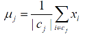

K 均值聚类¶
学习目标： 1. 了解 K 均值聚类算法原理 2. 了解蕨类时要注意的问题
1. Sklearn实现KMeans聚类¶
1.1 api介绍¶
sklearn.cluster.KMeans(n_clusters=8)
参数: n_clusters:开始的聚类中心数量 整型，n_clusters=8，生成的聚类数，即产生的质心（centroids）数。
方法: estimator.fit(x) estimator.predict(x) estimator.fit_predict(x)计算聚类中心并预测每个样本属于哪个类别,相当于先调用fit(x),然后再调用predict(x)
1.2 案例¶
随机创建不同二维数据集作为训练集，并结合k-means算法将其聚类，你可以尝试分别聚类不同数量的簇，并观察聚类效果：

聚类参数n_cluster传值不同，得到的聚类结果不同

1.3 流程分析¶

1.4 代码实现¶
- 创建数据集
import matplotlib.pyplot as plt
from sklearn.datasets.samples_generator import make_blobs
from sklearn.cluster import KMeans
from sklearn.metrics import silhouette_score
# 创建数据集
# X为样本特征，Y为样本簇类别， 共1000个样本，每个样本2个特征，共4个簇，
# 簇中心在[-1,-1], [0,0],[1,1], [2,2]， 簇方差分别为[0.4, 0.2, 0.2, 0.2]
X, y = make_blobs(n_samples=1000, n_features=2, centers=[[-1, -1], [0, 0], [1, 1], [2, 2]],
cluster_std=[0.4, 0.2, 0.2, 0.2],
random_state=9)
# 数据集可视化
plt.scatter(X[:, 0], X[:, 1], marker='o')

- 使用k-means进行聚类,并使用silhouette_score(轮廓系数)评估
model = KMeans(n_clusters=2, random_state=9)
y_pred = model.fit_predict(X)
# 分别尝试n_cluses=2\3\4,然后查看聚类效果
plt.scatter(X[:, 0], X[:, 1], c=y_pred)
plt.show()
# 用轮廓系数评估的聚类分数
silhouette_score(X, y_pred)
# 0.6435178953651656

1.5 小结¶
api：sklearn.cluster.KMeans(n_clusters=8)【知道】
参数:
- n_clusters:开始的聚类中心数量
方法：
-
estimator.fit_predict(x)
-
计算聚类中心并预测每个样本属于哪个类别,相当于先调用fit(x),然后再调用predict(x)
2.算法原理¶
K 均值聚类是一种典型的无监督学习算法，主要用于将相似的样本自动归到一个类别中。 在聚类算法中根据样本之间的相似性，将样本划分到不同的类别中，对于不同的相似度计算方法，会得到不同的聚类结果，常用的相似度计算方法有欧式距离法。
其中: 1. K: 初始中心点个数（计划聚类数） 2. means: 求中心点到其他数据点距离的平均值
算法流程如下：
（1）随机适当选择 K 个类的初始中心； （2）对任意一个样本，求其到 K 个中心的距离，将该样本归到距离最短的中心所在的类；

（3）利用均值等方法更新该类的中心值；

（4）重复执行 2、3 步, 直到算法收敛

算法终止条件：迭代次数/中心值不再发生变化/最小平方误差MSE

3. KMeans算法举例¶

通过下面的例子理解上面的算法迭代过程。
示例：假设我们有4个对象作为训练数据点，每个对象有2个属性。 每个属性表示对象的一个维度的坐标。

每个药物代表一个具有两个特征（X，Y）的点，我们可以将其在二维坐标系中表示，如下图所示。


（1）质心的初始值：假设我们使用药物A和药物B作为第一重心。 让c1和 c2表示质心的坐标，则c1 =(1,1)和c2 =(2,1)
（2）对象 - 质心距离：我们计算每个对象的聚类质心之间的距离。右侧D(0)
（3）距离矩阵中的每列都表示对象。（右侧图） 距离矩阵的第一行对应于每个物体与第一重心的距离，第二行是距离是每个对象与第二个重心的距离。 例如，药物三c3=(4,3)距离第一个质心c1=(1,1)的距离为sqrt((4-1)2+(3-1)2)=3.61;到第二个质心c2 =(2,1)的距离sqrt((4-2)2+(3-1)2)=2.83。
（4）对象聚类：我们根据最小距离分配每个对象。 因此，药A是分配到第1组，药物B至组2，药物C至组2和药物D至组2当且仅当对象被分配给该组时，下面的组矩阵的元素是1表示属于哪一类。

（5）迭代1次，确定质心：知道每个组的成员，现在我们计算新的基于这些新成员的每个组的质心。 第1组只有一个成员质心保持在c1=（1,1）。 组2现在有三个成员，因此重心是平均数三位成员之间的协调。


备注：

（6）迭代1，对象-质心距离：下一步是计算所有对象的距离新的质心。与步骤2类似，我们在迭代1中有距离矩阵

（7）迭代1，对象聚类：与步骤3类似，我们基于最小值分配每个对象距离。 基于新的距离矩阵，我们将药物B移动到组1，而所有其他对象仍然存在。 组矩阵如下所示：

备注：

（8）迭代2，确定质心：现在我们基于以前迭代的聚类重复步骤（5）来计算新的质心坐标。 组1和组2都有两个成员，因此
新的质心是


（9）迭代2，对象 - 质心距离：再次重复步骤2，我们有新的距离矩阵迭代2为：

（10）迭代2，对象聚类：再次，我们根据最小距离分配每个对象。

我们得到 的结果。 比较上一次迭代的分组和这个迭代显示对象不再移动组。 因此，k均值聚类的计算具有达到稳定，不再需要迭代。 我们得到最终的分组作为结果。
的结果。 比较上一次迭代的分组和这个迭代显示对象不再移动组。 因此，k均值聚类的计算具有达到稳定，不再需要迭代。 我们得到最终的分组作为结果。
备注:


总结
均值是一种基于属性/特征将对象分类或分组为K的算法组数。 K是正整数。 通过最小化平方和来完成分组数据与对应的集群中心之间的距离。 因此，K均值聚类的目的是对数据进行分类。
一开始，我们确定簇K的数量和假设这些聚类的质心或中心。 我们可以把任何随机选择对象作为初始质心或者第一个K对象（第一行数据）也可以作为初始质心。
那么K均值算法将会执行以下三个步骤，直到收敛
迭代直到稳定（=没有对象移动到其他分组）：
1.确定质心坐标
2.确定每个物体与重心（中心，或选取点）的距离
3.根据最小距离对对象进行分组（找到最近的质心）
4. 聚类时要注意的问题¶
K均值（K-Means）是聚类中最常用的方法之一，它基于点与点距离的相似度来计算最佳类别归属。但K均值在应用之前一定要注意两种数据异常： 1. 数据的异常值。数据中的异常值能明显改变不同点之间的距离相似度，并且这种影响是非常显著的。因此基于距离相似度的判别模式下，异常值的处理必不可少。 2. 数据的量纲不同。不同的维度和变量之间，如果存在数值规模或量纲的差异，那么在做距离之前需要先将变量标准化。例如: 订单金额可能是[0，10000000]，而订单数量则是[0，1000]。如果没有标准化操作，那么相似度将主要受到订单金额的影响。
-
数据量过大的时候不适合使用 KMeans。 3.1 K-Means在算法稳定性、效率和准确率（相对于真实标签的判别）上表现非常好，并且在应对大量数据时依然如此。它的算法时间复杂度上界为O(n * k * t)，其中n是样本量、k是划分的聚类数、t是迭代次数。
3.2 当真正面对海量数据时，使用K均值算法将面临严重的结果延迟，尤其是当K均值被用做实时性或准实时性的数据预处理、分析和建模时，这种瓶颈效应尤为明显。
3.3 针对K均值的这一问题，很多延伸算法出现了，MiniBatchKMeans就是其中一个典型代表。 MiniBatchKMeans使用了一个名为 Mini Batch 的方法计算数据点之间的距离。MiniBatch的好处是计算过程中不必使用所有的数据样本，而是从不同类别的样本中抽取一部分样本（而非全部样本）作为代表参与聚类算法过程。 由于计算样本量少，所以会相应减少运行时间；但另一方面，由于是抽样方法，抽样样本很难完全代表整体样本的全部特征，因此会带来准确度的下降
经过对 30000 样本点分别使用 K-Means 和 MiniBatchKMeans 进行聚类，对比之后运行时间 MiniBatchKMeans 是 K-Means的一半 （0.17 v.s. 0.36），但聚类结果差异性很小。
5. 小节¶
- K均值聚类算法是较为常用的聚类算法，其算法流程如下：
- 随机适当选择 K 个类的初始中心；
- 对任意一个样本，求其到 K 个中心的距离，将该样本归到距离最短的中心所在的类；
- 利用均值等方法更新该类的中心值；
- 重复执行 2、3 步, 直到算法收敛
- K 均值聚类算法容易受到异常值、不同量纲的影响，另外对于大数据场景也较为耗时。